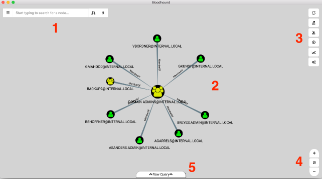

Authentication
When you first open BloodHound, you are greeted by the logon prompt.
The "Database URL" is the IP address and port where your neo4j database is running, and should be formatted as bolt://ip:7687/
The DB Username is the username for the neo4j database. The default username for a neo4j database is neo4j.
The DB Password is the password for the neo4j database. The default password for a neo4j database is neo4j. The password for the provided example database is BloodHound.
Overview
Upon successful logon, BloodHound will draw any group(s) with the "Domain Admins" in their name, and show you the effective users that belong to the group(s):

Above, the BloodHound interface is split into 5 parts:
Menu and search bar
Graph drawing area
Settings
Zoom in/out and reset
Raw cypher query